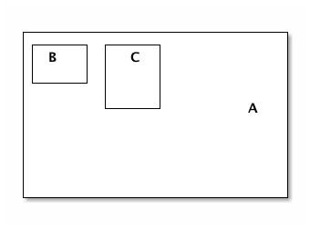
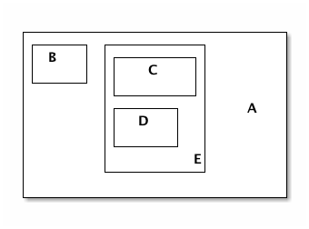

Introduction
The primary goal of Prime’s layoutsystem is to minimize the time and effort you spend on positioning, measuring and updating user-interface-elements.
Secondary it tries to minimize the amount of calculations and screen-updates by carefully tracking it’s own state and dirty properties.
Finally, it allows you to use your own implementation, without using the GUI of Prime. For example, you could create an html-canvas with weird-shapes that are positioned in a specific order.
Implementation
There are three main actors in the system:
-
Layoutclients
Main buildingblocks. Defines the size, position and children of each element.
-
Algorithms
Specifies how the LayoutClients are positionated relative to each other. Also defines which property-changes requires an update and which don’t.
-
Owners
Elements that are represented by LayoutClients. They listen to state-changes, revalidate the clients and update their own size and position when the LayoutClient changes.

In this diagram there are 3 UI-components, a menu-bar with two buttons in it. All three of them own a layout which is nested the same way. The layout-algorithm float-left is owned by the LayoutA and defines the position of the two buttons.
Box Model
The layout-model is comparibable to the css3 box-sizing value border-box. The original css-box-model can be quite frustrating when you work with liquid layouts so we tried to fix it by only implementing the border-box model.
|
Note
|
Prime-developers: border-box is supported by all modern browsers. PrimeVC should be able to apply some automatic quircks for the html-implementation with support for IE6/7. |

Units
Within the layout-system all position-and-size values are defined as integers without a specific unit. Floating points are not allowed and will be rounded within algorithm-calculations.
Validation-process
A LayoutClient can be in one-of-four states:
-
invalidated
-
validating
-
validated
-
parent_invalidated
LayoutContainer tries to find the most efficient way in validating the parent and it’s children but the validation-process still is delicate and expensive:
-
it’s recursive (starting at the highest invalidated layout-container to the lowest invalidated layout-client)
-
of the dependencies between the parent and children.
I.e. some children define their size as a percentage of the parent, while the parents size can be based on the size of the children.
LayoutClients
Prime-layout implements the following layoutclients:
LayoutClient
LayoutClient is a lightweight object storing the following basic properties:
-
position
-
size
-
margin
-
padding
-
innerBounds: size + padding
-
outerBounds: innerBounds + margin
If you would draw a square based on the properties of a layoutclient, you should use the following properties
graphics.drawRect( layout.outerBounds.left, layout.outerBounds.top, // x + y layout.innerBounds.width, layout.innerBounds.height // size );

AdvancedLayoutClient
This class is used for more complex UI-elements. It defines two types of size-values:
-
measured-size
Size values are updated by the owner based on it’s content (e.g. width/height of a text) or by a layout-algorithm.
-
explicit-size
Size values are specified by you. This value will always win over a measured value.
You shouldn’t read the value of the measured- and explicit-size directly but only use the inner- and outerBounds. The table below shows what the combination of values and the result of it.
| explicitWidth | measuredWidth | width |
|---|---|---|
NaN |
NaN |
NaN |
50 |
NaN |
50 |
NaN |
80 |
80 |
50 |
80 |
50 |
80 |
50 |
80 |

LayoutContainer
|
AdvancedLayoutClient
|
defines measured- and explicit size |
|
IScrollableLayout
|
defines scroll-position and the scrollable-size |
|
ILayoutContainer
|
defines the support for layout-client-children |
LayoutContainer has two important features;
-
support for layout-algorithms
-
support for layout-children
Layout algorithms support
A LayoutContainer can have one layout-algorithm. The algorithm is responsible for telling the container which changes should invalidate the container and will measure and positionate the children of the container.
Having only one algorithm per container is a big difference with how CSS deals with positioning UI-elements. CSS’s implementation allows you for example to have a container where a first child floats right and a second floats left. In prime you can only tell all children to float left, or all children to float right.
-
Predictability
All children are treated the same way. Their position is therefor easy to calculate and predict.
-
Simplicity
Less flexibility means fewer exceptions and therefor more speed and a lower chance of bugs.
-
Usage of new algorithms
Using only one algorithm allows you to positionate children in the strangest way. E.g. it’s easy to create an algorithm that will positionate the children in a sinus-wave.
-
Less flexible
Creating an exception for one child involves more boilerplate code and won’t give you the same flexibility of css . ??
Support for children
A LayoutContainer can have an infinite amount of children, a child can only have one parent. By adding a child to a container, it gives the parent some of it’s responsibilities:
-
everytime a property changes, the child will ask the parent if this change will also invalidate the parent.
-
Yes: change state to parent_invalidated. parent is responsible for validating the child again.
-
No: change state to invalidated. child is responsible for validating itself again.
-
-
parent must calculate the width or height when the child uses a percentWidth or percentHeight
-
parent is responsible for positionating the child
Scrollable size
| explicitWidth | measuredWidth | width | scrollableWidth |
|---|---|---|---|
NaN |
NaN |
NaN |
0 |
50 |
NaN |
50 |
0 |
NaN |
80 |
80 |
0 |
50 |
80 |
50 |
30 |
80 |
50 |
80 |
0 |

|
A
|
scrollPos(x, y) |
|
b-d
|
layoutContainer.children |
VirtualLayoutContainer
The previous chapter discussed why a LayoutContainer can only have one algorithm. Prime introduces a VirtualLayoutContainer to overcome the disadvantage of that.
Until now, all the LayoutClients represent some kind of UI-element. A VirtualLayoutContainer doesn’t represent a UI-element, but has the same properties as a LayoutContainer. That means it can define a different algorithm than it’s parent-layoutcontainer, and therefor allows you to step out of the restriction of one algorithm without having the overhead of an extra (unneeded) UI-element!
The virtual-container will add it’s own coordinates to that of each child. This will only happen when you use the methods getHorPosition() and getVerPosition()` to get the x&y-coordinates of LayoutClient.
Example
In this example there are 4 UIElements and 5 layout-elements, which would result in the following layout:

Examples
Build instructions
Below you find the commands to build the first four layout-tests. Make sure you execute these commands from the PrimeVC-root-folder.
Example 1 Bare bones layout:
> haxe build/build-flash-example.hxml \ -main examples.layout.LayoutExample1 \ -swf bin-debug/LayoutExample1.swf \ --no-traces \ && open bin-debug/LayoutExample1.swf
Example 2 Bare bones with the Prime display package:
> haxe build/build-flash-example.hxml \ -main examples.layout.LayoutExample2 \ -swf bin-debug/LayoutExample2.swf \ --no-traces \ && open bin-debug/LayoutExample2.swf
Example 3 Positioning Prime UIComponents:
> haxe build/build-flash-example.hxml \ -main examples.layout.LayoutExample3 \ -swf bin-debug/LayoutExample3.swf \ --no-traces \ && open bin-debug/LayoutExample3.swf
Example 4 What you want in practice, using CSS to layout UIComponents:
The build/build script handles building and running of the Prime CSS parser and requires Bash to run. Windows users: bash is included with Git for Windows - make sure it’s added to the PATH.
> build/build -m examples.layout.LayoutExample4 \ -s layoutExample4 \ -o LayoutExample4.swf -cp .